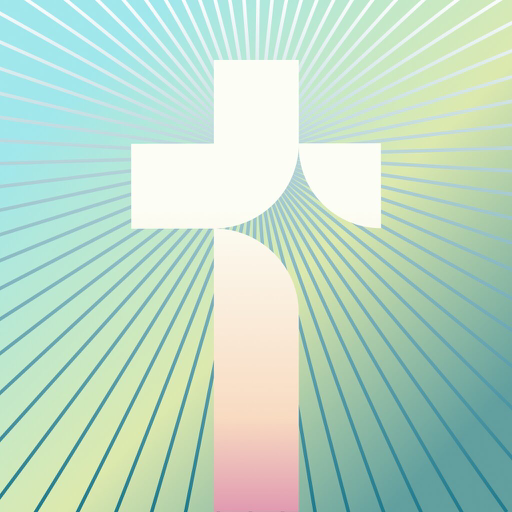
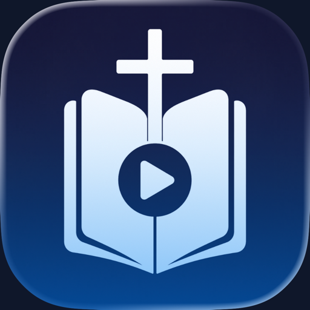

Two Sparrows 🕊️ — что мы строим (v1, 24.09.2026)
Стих дня и молитвы на виджетах iPhone. Позиционирование, аудитория, конкуренты, объём V1 и дизайн-система — по результатам волны 1 и турниров Jev.
0. Позиционирование
«When you are afraid, one verse on the screen you already check — not a chat and not a streak.»
Two Sparrows — честный виджет со стихом дня: стих на экране блокировки бесплатно и навсегда, только Писание (KJV / BSB / WEB), без рекламы и ИИ. Pro продаёт ритуал и покой — ночную молитву, стих под состояние, короткие молитвы голосом, StandBy и план чтения — за $39.99 в год (или 7 дней → $7.99/нед с датой списания и напоминанием за 48 часов). Отстройка от лидера Monkey Taps: там 3-дневный триал списывает год, напоминание не приходит, а в «библейских» виджетах цитаты проповедников.
1. Аудитория: 7 когорт вместо 4
Проверка гипотезы дала 4 когорты (35/30/20/15). Волна 1 (295 источников: 1 663 отзыва App Store, 1 939 постов Reddit, TikTok/Lemon8, форумы, ABS/Barna/Pew) подтвердила эстетику и тревожных, урезала «мам» и «KJV 45+» (возраст не подтверждён) и добавила три группы. Доли — оценка установок в US, не замер.
| Когорта | Доля | Что ищут |
|---|---|---|
| Эстетика 18–34 Aesthetic lock-screen Christian women 18–34 | 30% | bible verse widget |
| Женщины 35–55 Devotional women 35–55 (daily habit) | 22% | daily bible verse |
| Strugglers Strugglers: anxiety and phone habits, 18–40, both genders | 20% | bible verses for anxiety |
| Католики Catholics wanting a Catholic lock-screen verse | 10% | catholic bible verse lock screen |
| Пуристы/KJV Scripture-only purists (often KJV) | 8% | kjv bible verse widget |
| Подростки Teens 13–17 | 5% | bible verse lock screen |
| Испаноязычные Spanish-speaking US Christians | 5% | versiculo del dia |
Что подтвердилось
TikTok-ролики «поставь стих на экран блокировки, и он меняется каждый день» — 7.1M, 6.6M, 4.3M просмотров. Тревога — поиск №1 в YouVersion 2025. «Closer to God» — самая частая фраза в 4–5★ (104 из 1 323).
Что удивило
Католики: 20% взрослых US, Hallow ≈ $40M/год, а виджет Hallow обновляется только при открытии приложения. Подростки 13–17 заметны в отзывах, не платят, но разносят приложение. 7% отзывов Bible Path в US — на испанском.
Поправка к гипотезе
«Навязчивые уведомления 30%» — артефакт выборки из 20 отзывов. На 267 свежих 1–2★: биллинг-ловушка 37%, цена и пейвол 36%, реклама 10%, уведомления 3%. Главный фронт — честный пейвол.
2. Боли и JTBD
JTBD top-7 (тяжесть / готовность платить, 0–4)
| Job | Когорта | Тяж. | Плат. |
|---|---|---|---|
| Когда беру телефон, первым хочу видеть Слово, а не уведомления | Strugglers, эстетика | 3 | 2 |
| Красивый христианский экран блокировки, который сам меняется каждый день | Эстетика, подростки | 3 | 3 |
| Стих под то, что чувствую сейчас: тревога, страх, деньги, одиночество | Strugglers | 4 | 2 |
| Ежедневная привычка без чувства вины и без платы за стрик | Женщины 35–55 | 3 | 3 |
| Слушать, а не читать: молитва перед сном, в дороге | Женщины 35–55, Strugglers | 3 | 3 |
| Только Писание, в моём переводе, без ИИ и цитат проповедников | Пуристы, католики, испаноязычные | 3 | 1 |
| Напоминание в момент искушения: скроллинг, похоть | Strugglers (мужчины) | 3 | 1 |
Жалобы ниши: 525 отзывов 1–3★, классификация Jev
| Боль | Доля | |
|---|---|---|
| forced_paywall | 18.7% | |
| trial_trap | 17.9% | |
| price_too_high | 10.7% | |
| content_quality | 9.1% | |
| bug | 8.8% | |
| ads_spam | 5.9% | |
| missing_feature | 5.1% | |
| notifications_annoying | 1.7% | |
| widget_broken | 1.5% |
18% авторов негативных отзывов против платы за Писание в принципе (Bible Chat — 29%). У лидера Monkey Taps 17% жалоб — «это не Библия» (цитаты Остина и Кирка в виджетах).
3. Что показал Jev
Jev (TypeSafe System One) — синтетические пользователи: 19 персон по 7 когортам, взвешенные по долям. Он надёжен в относительном ранжировании, абсолютные проценты оплаты занижены/завышены — смотрите на порядок, не на цифру.
3.1 Турнир фич: 35 карточек × 19 персон × 2 прохода (1 330 запросов)
Score = 10·(0.45·полезность + 0.35·«заплатил бы за это» + 0.20·«вернусь завтра»). Два прохода с обратным порядком карточек сошлись (последний столбец).
| Фича | Score | Pay | Завтра | Проходы | |
|---|---|---|---|---|---|
| Scripture only — no pastor quotes, no AI Free | 5.78 | 0.29 | 0.68 | 5.6 / 5.5 | |
| Free Lock Screen verse widget Free | 5.30 | 0.16 | 0.70 | 5.1 / 5.1 | |
| Free Home Screen verse widget Free | 5.27 | 0.16 | 0.70 | 5.0 / 5.0 | |
| Sleep verses and night prayer Pro | 5.11 | 0.35 | 0.55 | 4.8 / 4.8 | |
| Short written daily prayer Pro | 4.66 | 0.32 | 0.52 | 4.2 / 4.3 | |
| One gentle daily reminder, off in one tap Free | 4.65 | 0.17 | 0.61 | 4.4 / 4.4 | |
| StandBy nightstand mode Pro | 4.55 | 0.29 | 0.52 | 4.2 / 4.3 | |
| 60-second audio prayer (voice) Pro | 4.50 | 0.30 | 0.53 | 4.2 / 4.2 | |
| Reading plan with a streak Pro | 4.50 | 0.31 | 0.58 | 4.1 / 4.2 | |
| Verses for how you feel Pro | 4.50 | 0.34 | 0.53 | 4.0 / 4.1 | |
| Prayer widget Pro | 4.39 | 0.29 | 0.52 | 4.1 / 4.1 | |
| Verse of the day in the app + full chapter (KJV) Free | 4.38 | 0.16 | 0.61 | 4.1 / 4.2 |
За что платят (pay по когортам)
| Фича | Pay | Эстетика 18–34 | Женщины 35–55 | Strugglers | Католики | Пуристы/KJV | Подростки | Испаноязычные |
|---|---|---|---|---|---|---|---|---|
| Sleep verses and night prayer | 0.35 | 0.37 | 0.36 | 0.43 | 0.29 | 0.23 | 0.23 | 0.31 |
| Verses for how you feel | 0.34 | 0.38 | 0.30 | 0.52 | 0.22 | 0.18 | 0.24 | 0.25 |
| Short written daily prayer | 0.32 | 0.35 | 0.35 | 0.37 | 0.26 | 0.21 | 0.22 | 0.26 |
| Reading plan with a streak | 0.31 | 0.35 | 0.29 | 0.38 | 0.26 | 0.18 | 0.23 | 0.27 |
| 60-second audio prayer (voice) | 0.30 | 0.33 | 0.29 | 0.38 | 0.23 | 0.19 | 0.21 | 0.30 |
| One-time purchase instead of a subscription | 0.30 | 0.31 | 0.33 | 0.26 | 0.27 | 0.33 | 0.24 | 0.25 |
| Prayer widget | 0.29 | 0.31 | 0.30 | 0.31 | 0.29 | 0.20 | 0.19 | 0.24 |
| Memory verse of the week | 0.29 | 0.30 | 0.33 | 0.30 | 0.23 | 0.22 | 0.29 | 0.25 |
Вывод: устанавливают ради бесплатного виджета, платят за ритуал — ночная молитва, стих под состояние (Strugglers 0.52), молитвы, план. Темы — не причина платить (pay 0.22).
Хвост турнира
| Фича | Score | Pay |
|---|---|---|
| Premium widget themes (fonts, colors, backgrounds) | 2.99 | 0.22 |
| Large text and high-contrast widget styles | 2.96 | 0.13 |
| Share a verse card | 2.69 | 0.20 |
| Verse changes during the day (hourly) and different verses on different widgets | 2.59 | 0.19 |
| Reminder before the trial ends | 2.50 | 0.14 |
| Catholic mode (Douay-Rheims, Gospel of the day) | 2.19 | 0.12 |
| Family Sharing for Pro | 1.94 | 0.17 |
| Spanish (Reina-Valera) and bilingual widget | 1.69 | 0.12 |
Католический режим и испанский нужны только своим когортам (pay 0.33 / 0.26) → V1.1 и волна 2. Apple Watch — 3.26 → V1.1.
3.2 Позиционирование: 9 формулировок Claude / Codex / Grok
Каждая персона видит выдачу App Store с тремя лидерами и нашим приложением, где первый скриншот несёт эту строку. Score = 10·(0.45·тап + 0.30·доверие + 0.25·понятность).
| Формулировка | Score | Тап | Доверие | |
|---|---|---|---|---|
| When you are afraid, one verse on the screen you already check — not a chat and not a streak. grok | 7.39 | 0.53 | 0.96 | |
| One verse and one short prayer before the news, and the only notification is the one you set. grok | 6.82 | 0.42 | 0.93 | |
| A calm two-minute Scripture and prayer ritual that fits between a busy morning and the rest of your day. codex | 6.22 | 0.37 | 0.85 | |
| Open your phone to a trustworthy verse and a short prayer for the feeling you are carrying today. codex | 6.15 | 0.37 | 0.83 | |
| Scripture only. No ads. No AI. We remind you before your trial ends. claude | 5.92 | 0.43 | 0.75 | |
| See God's Word before your notifications. claude | 5.89 | 0.34 | 0.78 | |
| A beautiful Bible verse on your iPhone every day, free for life; pay only when you want a deeper daily prayer ritual. codex | 5.60 | 0.36 | 0.61 | |
| A new verse on your Lock Screen. Every day. Free, forever. claude | 5.53 | 0.32 | 0.62 | |
| Today's verse is already on your lock screen, free, in KJV, and it is still there after you cancel. grok | 4.78 | 0.35 | 0.43 |
3.3 Онбординг и пейвол: 5 вариантов
Score = 10·(0.35·дошёл до конца + 0.35·начал триал/купил + 0.30·(1 − «чувствую обман»)). Последний столбец — выбор плана: годовой / недельный.
| Вариант | Score | Дошёл | Триал | Обман | Год / нед | |
|---|---|---|---|---|---|---|
| 3 screens · no paywall at all in onboarding · Pro only in Settings | 5.83 | 0.75 | 0.26 | 0.24 | 0.02 / 0.06 | |
| 3 screens · price shown early · paywall after widget preview · annual first | 5.78 | 0.73 | 0.30 | 0.28 | 0.07 / 0.06 | |
| 5 screens with 3 gentle questions · paywall at the end · annual first | 5.23 | 0.58 | 0.40 | 0.41 | 0.16 / 0.15 | |
| 3 screens · paywall after widget preview · weekly-trial first | 3.85 | 0.60 | 0.25 | 0.71 | 0.05 / 0.09 | |
| Leader-style: 12-question quiz · hard paywall · 3-day trial default (control) | 2.34 | 0.29 | 0.27 | 0.88 | 0.08 / 0.03 |
Недельный план первым воспринимается как ловушка (обман 0.71). Квиз лидера — 0.88. Решение: 3 экрана, цена с первого экрана, пейвол только по тапу на Pro, годовой первым.
4. Конкуренты
10 приложений + мы. Выручка — середина диапазона appark за 30 дней (один источник). US у лидера — лишь 22% выручки; Бразилия + Мексика дают трём лидерам в 2,4 раза больше, чем GB+CA+AU+DE+FR вместе.
| Приложение | Роль | MRR est. | Рейтинг (оценок) | Заметка |
|---|---|---|---|---|
| Two Sparrows: Bible Widget Loveiko Labs | self | — | — (0) | ASC app created 2026-09-23 — App ID 6815332799, name reserved, build 1.0 (1) uploaded (VALID). Not live: iTunes Lookup returns no record on |
| Bible Widgets: Verses & Prayer Monkey Taps | leader | $440,746 | 4.86 (113,069) | ≈ $441k/mo worldwide. Confidence: medium (single source). appark 2026-09-23: $240,407–$641,085/mo, point $400,678, of which US only $86,237 |
 Bible Chat: Daily DevotionalBook Vitals Inc. | aspirational | $869,701 | 4.92 (363,274) | ≈ $870k/mo worldwide. Confidence: medium. appark 2026-09-23: $474,382–$1,265,019/mo, point $790,637, US $357,504 (45%). 798k downloads/30d. |
| Bible Path: Prayers & Widgets DEEP FLOW SOFTWARE SERVICES - FZCO | peer | $464,587 | 4.78 (43,352) | ≈ $465k/mo worldwide. Confidence: medium. appark 2026-09-23: $253,411–$675,762/mo, point $422,351, US $83,847 (20%). 332k downloads/30d. Rel |
| Blessed - Daily Verse & Prayer Everblessed Technology Inc. | peer | $121,255 | 4.91 (103,621) | ≈ $121k/mo worldwide. Confidence: medium. appark 2026-09-23: $66,139–$176,371/mo, point $110,232, US $60,412 (55%). 149k downloads/30d. Rele |
| Faithe: Bible Videos & Study Tightrope Interactive | peer | $107,725 | 4.78 (9,153) | ≈ $108k/mo worldwide. Confidence: medium. appark 2026-09-23: $58,759–$156,691/mo, point $97,932, US $60,456 (62%). 49.6k downloads/30d. Rele |
 BibleWatch - Watch the BibleI.M. INFLUENCE MEDIA LTD | peer | $54,424 | 4.8 (8,516) | ≈ $54k/mo worldwide. Confidence: medium. appark 2026-09-23: $29,686–$79,162/mo, point $49,476, US $10,016 (20%). 20.3k downloads/30d. Releas |
| Bible Widget Kawaii, Incorporated | peer | $21,875 | 4.84 (27,252) | ≈ $22k/mo worldwide. Confidence: medium. appark 2026-09-23: $11,932–$31,818/mo, point $19,886, US $6,040 (30%). 39k downloads/30d. Released |
| #Bible - Verse of the Day Godward LLC | peer | $54,729 | 4.88 (389,142) | ≈ $55k/mo worldwide. Confidence: low. Not in _context_data.md; appark point estimate pulled 2026-09-23: $49,754/30d (US $13,290, 27%; China |
| Daily Bible Verse Widget Daniel Ni | peer | — | 4.82 (5,401) | No estimate. appark returned $0 revenue and 0 downloads for all countries on 2026-09-23 (no data, not a real zero: the app has 5.4k US ratin |
| Bible Life.Church | aspirational | — | 4.91 (13,789,344) | Non-commercial (listing: "No Ads or Purchases"; no IAP on the listing). appark shows $2,002/30d, treated as model noise. 4.0M downloads/30d |
Худшее у каждого — наш список отличий
| Кто | Худшее по отзывам | Наш ответ |
|---|---|---|
| Bible Widgets (Monkey Taps) | 3-дневный триал списывает год, напоминание не приходит; цитаты Остина; будильник не выключается | 7 дней + напоминание за 48 ч; только Писание; 1 уведомление |
| Bible Chat | с августа 2026 платное восстановление стрика ($3.99/день) даже подписчикам | стрик прощает пропуск, ничего не отнимаем у платящих |
| Bible Path | цена после ~12 вопросов; виджет игнорирует выбранный перевод | цена на первом экране; один перевод везде |
| Blessed | реклама (азарт, мат) и мошенники в сообществе | без рекламы и без соцфункций |
| Kawaii Bible Widget | виджет серый/чёрный или обрезан (40% жалоб) | QA всех семейств, стих под размер |
| YouVersion | почти ничего: мелкий простой виджет, стих повторяется | не конкурируем в чтении, дополняем экран блокировки |
StandBy не упоминает никто из 10; Apple Watch есть у трёх. Полный разбор: COMPETITORS.md, карточки в competitors/.
5. Объём V1 (из турнира и матрицы технологий: 22 фичи ≈ 32 дня разработки)
Бесплатно навсегда
- Стих дня + полная глава, KJV / BSB / WEB офлайн
- Виджет Home (S/M/L) и Lock Screen, 1 стиль, весь стих без обрезки
- «Scripture only — без цитат проповедников и ИИ»
- Выбор перевода на все поверхности
- 1 уведомление в день, выключается в один тап, по умолчанию выкл.
- Избранное и история
- Цена видна с первого экрана; «Оставить бесплатный виджет» на каждом пейволе
Pro — $39.99/год первым · 7 дней → $7.99/нед вторым
- Ночной режим: стихи и молитва перед сном (pay 0.35 — максимум)
- Стих под состояние: тревога, страх, благодарность, сила, горе, сон (Strugglers 0.52)
- Короткая письменная молитва к стиху (7 дней бесплатно)
- Аудио-молитва 60 с, 20–30 заранее озвученных файлов
- StandBy
- План чтения с прощающим стриком
- Молитвенный виджет, стих недели для запоминания
- Темы, в т.ч. тёмная «без пастели» и крупный текст; обои из стиха
Потом / никогда
- V1.1: Apple Watch, католический режим (Douay-Rheims, Евангелие дня), авто-обои через Shortcuts, iCloud
- Волна 2: испанский (RVR1909) и португальский, лицензии NIV/ESV, lifetime-покупка
- Никогда: AI-чат, AI-картинки, реклама, аккаунты, платный ремонт стрика, будильники
Тексты: KJV (общественное достояние), BSB (Berean Standard Bible, общественное достояние с 2023 — современный английский без лицензии), WEB. NIV/ESV только по лицензии; цены издатели не публикуют. Подробно: V1_SCOPE.md, research/tech-2026-09-23/TECH_OPTIONS.md.
6. Дизайн-система: кандидаты и консилиум
Формула Cysta: 0.50 × персоны Jev (7 когорт по весам) + 0.25 × тренды 2026 (6 критериев) + 0.25 × синтетические дизайнеры (5). Порог зазора 0.70, иначе раннофф. Судьи видели только текстовое описание и токены, не картинки.
Раунд 1
| Кандидат | Итог | Персоны | Тренды | Дизайнеры | Клон | Эстетика 18–34 | Женщины 35–55 | Strugglers | Католики | Пуристы/KJV | Подростки | Испаноязычные | |
|---|---|---|---|---|---|---|---|---|---|---|---|---|---|
D Heritage KJV Ivory paper, black transitional serif, red-letter accents — a printed Bible on your screen. | 6.75 | 7.46 | 5.48 | 6.60 | 0.28 | 6.8 | 9.0 | 7.2 | 8.0 | 9.3 | 4.1 | 5.3 | |
A Dawn Linen Warm cream linen, terracotta accents, humanist serif — the placeholder icon's world, grown up. | 6.69 | 7.16 | 5.44 | 7.00 | 0.37 | 7.8 | 7.4 | 7.9 | 6.6 | 6.3 | 3.2 | 5.9 | |
B Quiet Chapel Deep evening blue, candle-gold accents, light serif — StandBy-first, calm at night. | 6.52 | 6.58 | 6.81 | 6.11 | 0.35 | 6.0 | 7.1 | 7.4 | 7.4 | 6.7 | 4.0 | 5.1 | |
C Soft Sanctuary Pastel gradients, rounded sans, sticker-like widgets — the aesthetic 18–34 lock-screen look, done tastefully. | 4.52 | 4.48 | 4.25 | 4.88 | 0.61 | 6.6 | 2.6 | 6.4 | 1.7 | 1.0 | 4.1 | 4.0 |
Раннофф: A, D и гибрид E «Linen Heritage» (лён и терракота из A + типографика печатной Библии из D)
| Кандидат | Итог | Персоны | Тренды | Дизайнеры | Клон | Эстетика 18–34 | Женщины 35–55 | Strugglers | Католики | Пуристы/KJV | Подростки | Испаноязычные | |
|---|---|---|---|---|---|---|---|---|---|---|---|---|---|
E Linen Heritage Warm cream linen and terracotta from Dawn Linen, set in the printed-Bible typography of Heritage KJV — modern warmth, classic type. | 7.28 | 7.68 | 5.73 | 8.01 | 0.29 | 7.9 | 8.2 | 8.1 | 7.1 | 8.1 | 4.2 | 6.2 | |
D Heritage KJV Ivory paper, black transitional serif, red-letter accents — a printed Bible on your screen. | 6.76 | 7.48 | 5.52 | 6.55 | 0.27 | 6.8 | 8.9 | 7.3 | 8.0 | 9.3 | 4.1 | 5.4 | |
A Dawn Linen Warm cream linen, terracotta accents, humanist serif — the placeholder icon's world, grown up. | 6.70 | 7.11 | 5.46 | 7.13 | 0.36 | 7.7 | 7.4 | 7.9 | 6.4 | 6.2 | 3.4 | 5.7 |
Рекомендация: E «Linen Heritage». Лидирует у персон (7.68) и дизайнеров (8.01), самый низкий риск клона (0.29), единственный кандидат без провала ни в одной когорте. Зазор над D — 0.52, ниже правила 0.70, поэтому лок — за основателем. Пастель (C) проиграла везде, кроме эстетики и Strugglers: мамы 2.6, католики 1.7, пуристы 1.0. Токены: DESIGN_SYSTEM.md.
7. Открытые решения владельцу
| Вопрос | Варианты / рекомендация | Что блокирует |
|---|---|---|
| Дизайн-система | E «Linen Heritage» (рекомендую) / D Heritage KJV / A Dawn Linen | лок в DESIGN_SYSTEM.md, иконка под неё |
| Объём V1 | Free + Pro по разделу 5 (рекомендую) / урезать до виджета + ночной молитвы + настроения | старт разработки |
| Переводы на старте | KJV + BSB + WEB без NIV/ESV (рекомендую) / ждать лицензий | листинг, онбординг |
| Пейвол | годовой первым, недельный с датой списания и напоминанием за 48 ч (рекомендую; исключение из правила Cysta «без уведомлений об оплате») | RevenueCat, COMPLIANCE |
| Позиционирование | строка Grok #3 «When you are afraid…» на первый скриншот (рекомендую) / Grok #2 | скриншоты, промо-текст |
| Конкуренты на дашборд | утвердить список 10 + мы → sync в funnel_competitors | дашборд |
| Порядок локализаций | PT-BR + ES-MX раньше DE/FR (данные appark) / как в плане | волна 2 |
| Lifetime-покупка | $29.99 разово рядом с подпиской / нет | ответ пуристам |
| Папка проекта | переименовать в ~/Documents/apps/20-two-sparrows (нужно для sync-competitors) | инфраструктура |
Полный формат с вариантами и обоснованием — APPROVALS.md в репозитории love8ko/TwoSparrows-bible.
Источники и метод
- Волна 1 (Orca, 23–24.09.2026): три воркера Claude Opus 5.5 — конкуренты (3 596 отзывов, классификация Jev), пользователи (295 источников), технологии (38 фич, лицензии); второе мнение — Codex (gpt-6-sol) и Grok (72 постов X через x_keyword_search), слепой бриф. Сводка расхождений:
research/wave1-2026-09-23/CONSILIUM.md. - Jev: TypeSafe System One, jev-latest, 19 персон / 7 когорт; турниры фич, позиционирования, пейвола, дизайна —
research/*-jev-2026-09-24/,research/design-2026-09-24/. - Гипотеза: МЭО GO 9/10, ожидаемый net MRR $6 971 к 6-му месяцу —
research/hypothesis/. Grok и Codex считают модель оплаты оптимистичной (3–6% установок, в основном годовые).
Страница собрана скриптом docs/build_design_page.py из JSON-результатов; цифры совпадают с файлами в репозитории. Обновлено 2026-09-24.